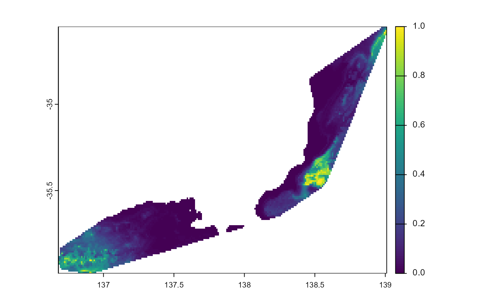

Finds any .tif files in `dir` and writes them to .png files. Includes the retrieval and addition to the map of: various SDM metrics; and the original presence points.
png_from_preds(
dir,
trim = TRUE,
force_new = FALSE,
include_blocks = TRUE,
do_gc = TRUE,
...
)Arguments
- dir
Character. Name of directory containing predicted .tif(s) to save as .png
- trim
Logical. Trim NA values from outside (using `terra::trim()`)
- force_new
Logical. If .png file already exists, recreate it?
- include_blocks
Logical. Make a .png (map) of the blocks?
- do_gc
Logical. Run `base::rm(list = ls)` and `base::gc()` at end of function? Useful when running SDMs for many, many taxa, especially if done in parallel.
- ...
Passed to `fs::dir_ls()`
Value
`invisible(NULL)`. Writes .png files with the same file name as any .tif files
Examples
library("envSDM")
out_dir <- file.path(system.file(package = "envSDM"), "examples")
data <- file.path(system.file(package = "predicts"), "ex") |>
fs::dir_ls(regexp = "\\.csv$") |>
tibble::enframe(name = NULL, value = "path") |>
dplyr::mutate(taxa = gsub("\\.csv", "", basename(path))
, presence = purrr::map(path, rio::import, setclass = "tibble")
, presence = purrr::map(presence
, \(x) x |>
dplyr::filter(!is.na(lat)
, !is.na(lon)
)
)
, out_dir = fs::path(out_dir, taxa)
)
# Run a single model using all the data from the 'best' tune
purrr::pwalk(list(data$out_dir)
, \(a) run_full_sdm(out_dir = a
, metrics_df = envSDM::sdm_metrics
)
)
#> run full model for acaule
#> run full model for bradypus
env_dat <- system.file("ex/bio.tif", package = "predicts")
# Predict from the best model
purrr::pwalk(list(data$out_dir)
, \(a) predict_sdm(out_dir = fs::path(a, "best")
, predictors = env_dat
, is_env_pred = FALSE
, limit_to_mcp = TRUE
, check_tifs = TRUE
)
)
# make .png for each predict
purrr::walk(data$out_dir
, \(x) png_from_preds(x
, recurse = 1
, include_blocks = FALSE
)
)
# example plots
# masked to mcp
purrr::walk(data$out_dir
, \(x) fs::path(x, "best", "mask.tif") %>%
terra::rast() %>%
terra::trim() %>%
terra::plot()
)

 # threshold
purrr::walk(data$out_dir
, \(x) fs::path(x, "best", "thresh.tif") %>%
terra::rast() %>%
terra::trim() %>%
terra::plot()
)
# threshold
purrr::walk(data$out_dir
, \(x) fs::path(x, "best", "thresh.tif") %>%
terra::rast() %>%
terra::trim() %>%
terra::plot()
)